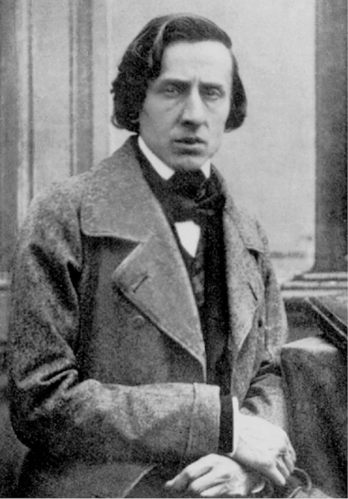
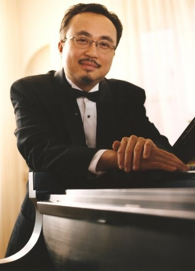

Tiết 30: nhạc sĩ Chopin và Khúc nhạc buồn
Tác giả: Chopin
Frédéric François Chopin (1/3/1810 – 17/10/1849) là nhà soạn nhạc và nghệ sĩ dương cầm người Ba Lan của thời kỳ âm nhạc Lãng mạn.
Ông nổi tiếng toàn thế giới như một trong những người đi tiên phong của thời kỳ này "với chất thơ thiên tài đi cùng với kỹ thuật không một ai đương thời có thể sánh bằng". Chopin sinh ra tại Công quốc Warszawa và lớn lên chủ yếu ở thành phố Warsaw, sau này trở thành một phần của Vương quốc Lập hiến Ba Lan vào năm 1815.
Chopin sớm nổi tiếng là thần đồng, và ông được đào tạo âm nhạc và văn hóa xuất sắc trước khi rời khỏi Ba Lan vào năm 20 tuổi. Chuyển tới Paris, ông trình diễn hơn 30 buổi trong 18 năm chủ yếu tại các buổi dạ tiệc. Ông cũng kiếm sống bằng việc bán tác phẩm và dạy học với học phí cao.
Năm 1835, ông nhập quốc tịch Pháp. Chuyến đi thăm Majorca ở Tây Ban Nha (1838-1839) chính là một trong những giai đoạn sung sức nhất trong sự nghiệp sáng tác của Chopin. Những năm cuối đời, suốt hầu hết cuộc đời mình, sức khỏe của Chopin không được ổn định. Ông qua đời ở Paris vào tháng 10 năm 1849 ở tuổi 39, với nhiều khả năng là do bệnh lao phổi.
Tất cả các tác phẩm của Chopin đều có piano. Hầu hết là cho piano solo, mặc dù ông cũng đã viết hai concerto cho đàn piano, một vài tác phẩm nhạc thính phòng, và 19 bài hát đặt lời Ba Lan. Phong cách piano của ông là bí truyền và thường đòi hỏi kỹ thuật: những màn trình diễn của ông đã được ghi nhận về sắc thái và độ nhạy. Chopin đã phát minh ra khái niệm về nhạc ballade.
Tác phẩm piano chính của ông cũng bao gồm các bản mazurka, waltz, nocturne, polonaise, étude, impromptu, scherzo, prelude và sonata, một số được xuất bản chỉ sau khi ông chết. Các nhạc sĩ có ảnh hưởng đến phong cách sáng tác của ông là dân ca Ba Lan, nhạc cổ điển truyền thống của J. S. Bach, Mozart, và Schubert, và bầu không khí của các tiệm Paris mà ông là khách thường xuyên. Những đổi mới của ông về phong cách, sự hài hòa, và hình thức âm nhạc, và sự kết hợp âm nhạc với chủ nghĩa dân tộc của ông, đã có ảnh hưởng trong suốt và sau giai đoạn cuối lãng mạn. Âm nhạc của Chopin, với danh tiếng của ông như là một trong những siêu sao đầu tiên của âm nhạc, với các mối liên hệ (gián tiếp) với các cuộc biến động chính trị, kèm cuộc sống tình cảm hỗn loạn thường xuyên, và cái chết sớm của Chopin đã khiến ông trở thành biểu tượng hàng đầu của thời đại lãng mạn. Tác phẩm của ông vẫn còn phổ biến cho đến ngày nay, và ông là chủ đề của nhiều bộ phim và tiểu sử với các mức độ trung thực lịch sử khác nhau. Hơn 230 tác phẩm của Chopin còn được lưu giữ cho đến ngày nay; một số tác phẩm từ thời thơ ấu đã bị mất.
Ngày 30 tháng 1 năm 2018, Viện Fryderyk Chopin thông báo tổ chức này sẽ đưa toàn bộ sưu tập (gần 40.000 kỷ vật của Chopin, nằm trong bộ sưu tập Di sản thế giới của Tổ chức Giáo dục, Khoa học và Văn hóa Liên Hiệp Quốc) của Frédéric François Chopin lên Internet và đến năm 2020 và công chúng có thể truy cập miễn phí. Thêm nữa, bất cứ ai cũng có thể tải các bản thu âm từ các cuộc thi piano Chopin toàn cầu do Viện tổ chức ngoài việc nghiên cứu và quảng bá tác phẩm của nhà soạn nhạc trên khắp thế giới. Người truy cập không chỉ có thể tìm kiếm và tải các bản nhạc hoặc trích đoạn mà còn có được các phân tích đa dạng về nhịp điệu, hòa âm, giai điệu và nhiều khía cạnh khác của âm nhạc.
Trái tim của Chopin

Tác phẩm của Chopin:
Khúc nhạc buồnTuyển tập Chopin
Nghệ sỹ dương cầm Đặng Thái Sơn
Đặng Thái Sơn (sinh 2/7/1958 tại Hà Nội) là một nghệ sĩ dương cầm Canada gốc Việt. Ông nổi danh sau khi đoạt giải nhất cuộc thi piano quốc tế Frédéric Chopin lần thứ X (tháng 10 năm 1980) ở Warszaw (Ba Lan). Đó là lần đầu tiên một nghệ sĩ dương cầm châu Á đoạt giải nhất tại cuộc thi này.
Đặng Thái Sơn sinh ra trong gia đình có truyền thống nghệ thuật, cha là nhà thơ, nhạc sĩ Đặng Đình Hưng còn mẹ là nghệ sĩ piano Thái Thị Liên. Hai anh chị của ông là Đặng Hồng Quang (con riêng ông Hưng) và Trần Thu Hà (con riêng bà Liên) cũng đều đi theo nghiệp dương cầm. Từ bé, Đặng Thái Sơn học piano với mẹ.
Năm 1965, ông bắt đầu học nhạc tại Nhạc viện Hà Nội. Ông được nhạc sĩ dương cầm Isaac Katz khám phá vào năm 1974. Năm 1976, Đặng Thái Sơn được nhận vào học tại Nhạc viện Quốc gia Tchaikovsky ở Moskva. Tại cuộc thi piano quốc tế Frédéric Chopin lần thứ X (1980), Đặng Thái Sơn là một trong 3 thí sinh tới từ Nhạc viện Tchaikovsky. Hai thí sinh kia là Tatyana Shebanova (người Nga) (đoạt giải nhì) và Ivo Pogorelich (người Nam Tư). Cuộc thi này đã trở nên nổi tiếng trong lịch sử cuộc thi piano Chopin vì đây là lần đầu tiên một người châu Á đã đoạt giải nhất.
Link các bài biểu diễn của Đặng Thái Sơn:
Chopin Scherzo No.2, Op.31Chopin Etude in F major Op.10, No.8
Phóng sự về nghệ sỹ Đặng Thái Sơn